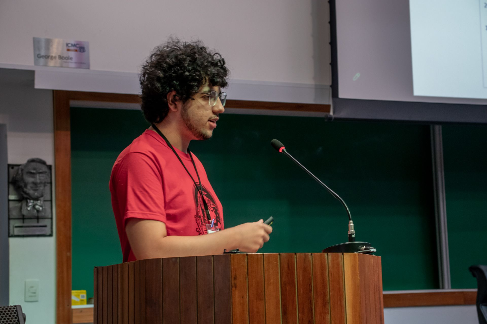

Sou matemático e engenheiro. Faço doutorado em Matemática Aplicada na FGV/EMAp (otimização estocástica para sistemas de energia, defesa prevista para 2028) e estou finalizando o mestrado em Engenharia de Sistemas e Computação pela COPPE/PESC UFRJ (modelos generativos modernos sob a ótica do Transporte Ótimo, defesa prevista para Dezembro 2026). Minha graduação é em Matemática Aplicada pela UFRJ, com ênfase em Computação Científica.
Minha paixão reside na aplicação da matemática e da computação para solucionar problemas complexos e desenvolver tecnologias inovadoras. Tenho particular interesse nas áreas de Modelos Generativos, Otimização Estocástica e Engenharia de Agentes de IA, com aplicações no setor financeiro, elétrico e em desafios de engenharia em geral. Profissionalmente, atuo como founding engineer na Pluma Finance, onde construí a plataforma de agentes de IA para engenharia de software e os pipelines de transações de uma fintech de finanças pessoais. Em paralelo, sigo como consultor / Project Manager no LabMA UFRJ, em projetos de tábuas biométricas e otimização de pipelines de dados em larga escala.
Para colaborações, consultoria, aulas ou mais informações:
Email: ruanfelipe2010@gmail.com
LinkedIn: linkedin.com/in/ruan-sousa-9757701b5